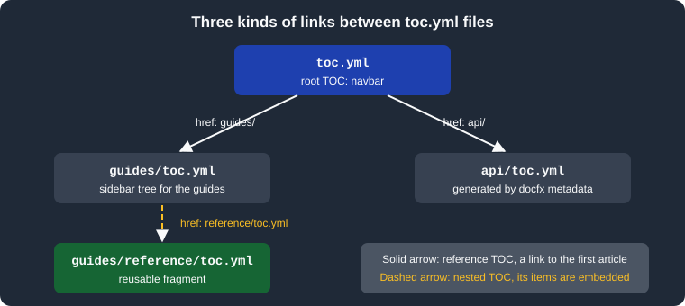

Table of Contents
|
This content was generated with the assistance of AI and should be verified against the official documentation before being relied on in production. |
This page was written against DocFX 2.81.0 (the latest release, published 2026-09-25) and checked on 2026-10-26. A table
of contents (TOC) tells DocFX how documents are grouped and ordered, which tree is shown in the sidebar of a page and
what the navigation bar at the top contains. The examples use the Pocket Units library and were built with DocFX 2.81.0
in the mcr.microsoft.com/dotnet/sdk:10.0 Docker image, with the default and modern templates combined.
What a TOC is and why it exists
DocFX does not infer navigation from the folder layout. Every site needs at least one TOC file, normally named
toc.yml, that lists the pages in the order the reader should see them. The build turns each TOC into a toc.json
file next to the pages (plus a toc.html when the default template is part of the build), and writes two metadata
tags into every page: docfx:tocrel points to the TOC that belongs to that page and docfx:navrel points to the TOC
that fills the navigation bar.
The same file type serves three purposes, and which one a file plays depends only on where it is and how other TOCs link to it:
-
a sidebar tree for a group of pages, such as the guides or the API reference;
-
a fragment that other TOCs embed (a nested TOC), so one list is maintained once;
-
the root
toc.ymlnext todocfx.json, which becomes the top navigation bar.

The figure shows the files of the example site: the root TOC links to the folders guides/ and api/ with reference
entries, and guides/toc.yml embeds a reusable fragment with a nested entry. The API TOC is generated by
docfx metadata (see .NET API docs).
The YAML format
A TOC is a YAML tree of nodes. The root can be a list of nodes or a mapping with an items list; the mapping form is
needed when the file carries its own properties such as order. The official page documents these node properties:
| Key | Meaning |
|---|---|
|
Display text of the node. It is optional: when omitted, DocFX uses the |
|
Where the node leads: a file path relative to the TOC file, an absolute URL, another TOC file or a folder ending in a slash. It is optional, because a node can exist only to group other nodes. |
|
The children of the node. |
|
The UID of an article or API item, used instead of |
|
Shows the children when the page loads. It works only with the |
Source: DocFX docs: Table of Contents
The example below is the sidebar of the Pocket Units guides. It uses every node form: a plain page, a group with an
expanded subtree, a nested TOC, a node with only a uid, and a group without a link.
items:
- name: Getting started
href: getting-started.md
- name: Conversions
expanded: true
items:
- href: lengths.md
- name: Rounding rules
href: rounding.md
- name: API types
href: reference/toc.yml
- uid: PocketUnits.Converter
- name: Release notesSource: DocFX docs: Table of Contents
Building the site produces this guides/toc.json, formatted here for reading:
{
"items": [
{ "name": "Getting started", "href": "getting-started.html", "topicHref": "getting-started.html" },
{
"name": "Conversions",
"expanded": true,
"items": [
{ "name": "Lengths", "href": "lengths.html", "topicHref": "lengths.html" },
{ "name": "Rounding rules", "href": "rounding.html", "topicHref": "rounding.html" }
]
},
{
"name": "API types",
"includedFrom": "~/guides/reference/toc.yml",
"items": [
{ "name": "Converter", "href": "../api/PocketUnits.Converter.html", "topicUid": "PocketUnits.Converter" },
{ "name": "LengthUnit", "href": "../api/PocketUnits.LengthUnit.html", "topicUid": "PocketUnits.LengthUnit" }
]
},
{ "name": "Converter", "href": "../api/PocketUnits.Converter.html", "topicUid": "PocketUnits.Converter" },
{ "name": "Release notes" }
]
}Source: output of docfx docfx.json (DocFX 2.81.0); the topicHref entries of the API nodes were left out of the listing
to keep it short.
What this output shows:
-
hrefvalues are written relative to the TOC file and rewritten to the output file names (.mdbecomes.html). -
Lengthshas nonamein the source; DocFX took the headingLengthsfromlengths.md. -
The node with only
uid: PocketUnits.Convertergot its nameConverterand its link from the API page. -
Release noteshas neitherhrefnoritems: it is rendered as a label without a link. -
The nested TOC is embedded with a marker,
includedFrom, that records which file supplied the items. -
Properties that DocFX does not know are not rejected. A node written with a misspelled key such as
expand: truewas copied to the output as it is and had no effect, and no warning was printed.
Markdown TOCs
DocFX 2.81.0 also reads a TOC written as a Markdown file named toc.md, where headings give the nesting level and
each heading holds a link. The official TOC page documents only the YAML form, so prefer toc.yml for new sites.
# [Intro](intro.md)
## [Sub page](sub.md)
## [Docs site](https://example.org/docs)Source: the DocFX reader for Markdown TOCs, MarkdownTocReader.cs
The build of this file produced one top node Intro with two children, Sub page and the external Docs site, with
the same JSON structure as a YAML TOC. A line that does not match the supported patterns stops the build with an
Invalid toc file error that names the line.
Which TOC does a page show
Every page is associated with one TOC. The rule from the official page is:
-
If exactly one TOC lists the page through
href, that TOC is shown. -
If several TOCs list the page, or none lists it, DocFX picks the TOC that is the nearest by the number of directory jumps.
-
The property
orderat the top of a TOC file overrides that pick: TOCs with a smallerorderare tried first. The default order is0. -
Nested TOCs get
order: 100by default, so a TOC that embeds them wins over them.
The decision above is a reading of the official text, not an additional rule from the source code. The effect was
checked on the example site. The API pages PocketUnits.Converter.html are listed both by api/toc.yml and by
guides/toc.yml (through the uid node and through the nested fragment). In the default build the page picked the
nearest TOC:
<meta name="docfx:tocrel" content="toc.html">Source: api/PocketUnits.Converter.html, generated by DocFX 2.81.0.
After adding order: -1 as the first line of guides/toc.yml, the same page pointed to the guides TOC:
<meta name="docfx:tocrel" content="../guides/toc.html">Source: api/PocketUnits.Converter.html, generated by DocFX 2.81.0 after the change.
The namespace page api/PocketUnits.html kept toc.html, because only api/toc.yml listed it. A TOC with order
therefore changes the sidebar of every page it lists, not only of one page.
Nested TOCs
To include one TOC in another, set href of a node to the path of a toc.yml file. The items of that file are placed
under the node. This is also the way to reuse a list in several TOC files.
items:
- name: Converter
uid: PocketUnits.Converter
- name: LengthUnit
uid: PocketUnits.LengthUnitSource: DocFX docs: Table of Contents
Together with the entry href: reference/toc.yml in guides/toc.yml, this renders the node API types with the two
children shown in the JSON above. The generated guides/reference/toc.json carries an order of 100, the default order of
a nested TOC.
Reference TOCs
A reference TOC links to another TOC without copying its items. Set href to a folder and end the value with /. The
node becomes a link to the first article of the TOC in that folder, and that folder’s TOC is the one that appears in
the sidebar once the reader opens the page. Reference TOCs suit entries that lead to independent sections:
- name: System
href: System/
- name: System.Collections
href: System.Collections/Source: DocFX docs: Table of Contents
If the node should open a different page than the first article, the data model also has a topicHref property. It was
not documented on the official TOC page, so the following was only tried, not specified: a node with
href: reference/ and topicHref: lengths.md produced the output keys href with the value lengths.html and
tocHref with the value reference/toc.html in guides/toc.json, so the link opens lengths.html while the sidebar
comes from reference/toc.yml.
The root TOC as navigation bar
The toc.yml that sits in the same folder as docfx.json fills the navigation bar at the top of every page. It
normally uses reference TOCs, so each entry opens a section with its own sidebar. This is the root TOC of the example
site; it also shows that an absolute URL is a valid href:
- name: Guides
href: guides/
- name: Reference
href: api/
- name: Source
href: https://github.com/example/pocket-unitsSource: DocFX docs: Table of Contents
The generated root toc.json resolved the two folders to their first articles and linked every page to it through
docfx:navrel:
{"items":[
{"name":"Guides","href":"guides/getting-started.html","tocHref":"guides/toc.html","topicHref":"guides/getting-started.html"},
{"name":"Reference","href":"api/PocketUnits.html","tocHref":"api/toc.html","topicHref":"api/PocketUnits.html"},
{"name":"Source","href":"https://github.com/example/pocket-units","topicHref":"https://github.com/example/pocket-units"}
]}Source: root toc.json generated by DocFX 2.81.0.
The navigation bar can be switched off for the whole site or a page with the template metadata _disableNavbar, and
the sidebar tree with _disableToc. Both are described in the docfx.json reference and belong to the template
settings covered in Templates and Customization.
Expanding nodes
expanded: true asks the template to show a node’s children when the page opens. The official page states that it
works only with the modern template. The key is carried to toc.json (as in the example above), but it is the
template’s JavaScript that acts on it. The toc.html produced by the default template for the same file showed the
group Conversions with its children in the markup and no expanded marker. This agrees with the documented limit;
no browser was used to compare the two renderings visually.
The script of the modern template also marks the ancestors of the current page as expanded when the page loads, so
expanded is mostly useful for sections that should be visible from the landing page.
TOCs generated from .NET code
docfx metadata writes its own TOC next to the API YAML files. For Pocket Units it produced api/toc.yml with the
namespace and its types:
### YamlMime:TableOfContent
items:
- uid: PocketUnits
name: PocketUnits
type: Namespace
items:
- uid: PocketUnits.Converter
name: Converter
type: Class
- uid: PocketUnits.LengthUnit
name: LengthUnit
type: Enum
memberLayout: SamePageSource: output of docfx metadata (DocFX 2.81.0).
The shape of this TOC is controlled by docfx.json options of the metadata section: namespaceLayout (flattened by
default, or nested), categoryLayout (flattened, nested or none; valid for the apiPage and markdown output
formats only) and memberLayout. They are described in .NET API
docs. Do not edit the generated file by hand; reference its folder from a hand-written TOC instead, as the root TOC
above does with api/.
TOC metadata
A TOC file is a document too, so metadata can be set for it. The precedence is fileMetadata first, then keys written
in the toc.yml file itself, then globalMetadata. This lets a build override a setting of a generated TOC. The
PDF properties pdf, pdfFileName, pdfCoverPage and pdfTocPage are set this way; see
PDF Output. The mapping rules for docfx.json are in
docfx.json.
Errors and warnings
TOC files are part of the build, so they must be in the build.content file list (the example lists toc.yml and
guides/**/toc.yml); a TOC that the file list does not match is not processed. Broken entries are
reported as warnings; these are the messages DocFX 2.81.0 printed when guides/toc.yml contained a missing file and
an unknown UID:
/work/guides/toc.yml(0,1): warning InvalidFileLink: Invalid file link:(~/guides/nope.md).
/work/guides/toc.yml: Unable to find file "nope.md" for Href referenced by TOC file "guides/toc.yml"
/work/guides/toc.yml: Unable to find file "nope.md" for TopicHref referenced by TOC file "guides/toc.yml"
/work/guides/toc.yml: warning UidNotFound: Unable to find file with uid "No.Such.Uid" referenced by TOC file "guides/toc.yml"Source: output of docfx docfx.json (DocFX 2.81.0).
The build still succeeded with 2 warnings. The broken node is kept in the output with its unresolved href for the
missing file, and the node with the unknown UID appears without a name or link. Use --warningsAsErrors in
continuous integration (see CLI) to turn such warnings into failures.
Pitfalls
-
hrefis relative to the TOC file that contains it, and the official page requires a trailing slash on a folder reference. -
A folder reference (
guides/) needs atoc.ymlin that folder; the generated link is the first article of that TOC. -
Do not list the same page in several unrelated TOCs unless you set
order; the nearest TOC is used otherwise, which can change when files are moved. -
The
moderntemplate is required forexpanded. For the other template keys, a file in the wrong template folder silently does nothing (see Templates and Customization). -
Unknown keys are copied as they are and never reported, so a typo in a key is not detected by the build.
-
An
hrefto an article does not provide the article’s UID. Useuidwhen links should survive file moves, and see Links and Cross References for how UIDs are resolved.
The C# conventions for XML documentation comments, which feed the API TOC, are covered in C# coding conventions and documentation; the build tooling around them is in C# build and tooling, and the Visual Basic equivalent in Visual Basic XML documentation.